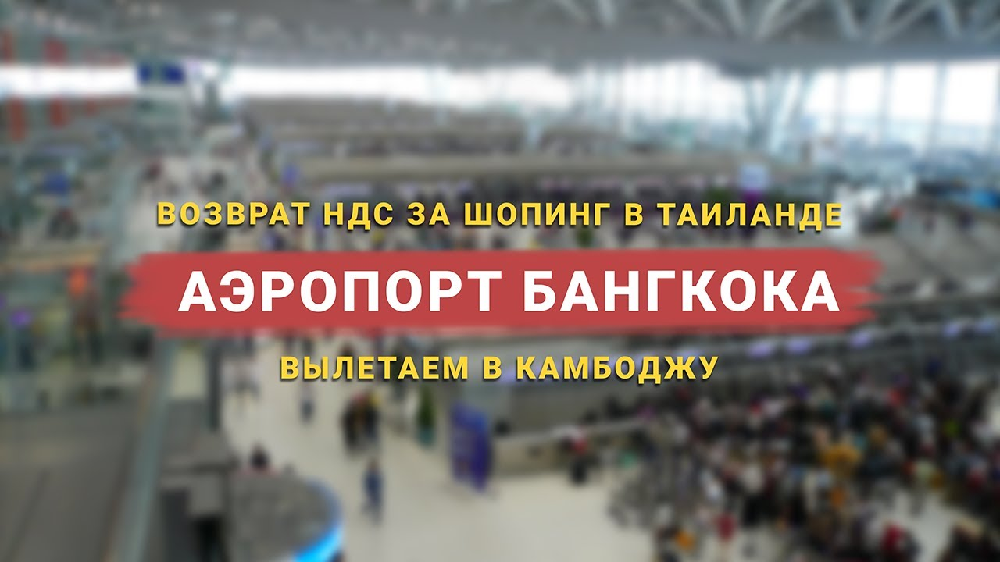

Welcome to Компенсация НДС 2020
Как возвращается НДС: схема возврата (возмещения) - nalog-nalog.ru
2020.11.16 10:14
Подписывайтесь на новости Подписаться ОК Присоединяйтесь к нам в соц. сетях: Новости Статьи Подборки Калькуляторы Календари Форум Поиск Новости Статьи Подборки Калькуляторы Календари Форум Важное за неделю Новое в 4 квартале Инвентаризация График отпусков-2021 Новые коды в платежке Электронные трудовые книжки Порядок расчета НДС в 2020-2021 годах (КБК, формула и др.) НДС 2020-2021 Декларация НДС 2020-2021 Плательщики (НДС) НДС: объект налогообложения Освобождение от НДС Льготы по НДС Налоговая база (НДС) Ставка (НДС) Счет-фактура Универсальный передаточный документ (УПД) Книга покупок Книга продаж Журнал счетов-фактур Раздельный учет (НДС) Вычет НДС Восстановление НДС НДС при импорте НДС при экспорте Налоговый агент (НДС) Возмещение НДС Уплата НДС Рубрикатор Бухгалтерский учет Бухгалтерская отчетность Аудит Налоговые изменения 2021 Налоговые изменения 2020 Налог на прибыль НДС Страховые взносы 2020-2021 Пособия НДФЛ УСН ЕНВД (до 2021) Налог на имущество Земельный налог Транспортный налог Торговый сбор ЕСХН ПСН Водный налог Экологический налог Налог на игорный бизнес Акцизы Уплата налогов (взносов) Возврат и зачет налогов Налоговые проверки Ответственность Статистика Самозанятые Банк Онлайн-кассы ККТ ККМ Блокировка счета МСФО Управленческий учет Анализ хозяйственной деятельности (АХД) Охрана труда и аттестация Охрана труда Валютные операции Налоговая система РФ Налоговое планирование Финансовый контроль Договоры ООО АО Справочная информация Проекты Банк касса Расчеты Учет затрат Учет ОС и НМА Учет МПЗ Зарплаты и кадры Основы трудового законодательства Прием на работу и переводы Увольнение Трудовой договор Коллективный договор и локальные акты Рабочее время и режим труда Отпуск и время отдыха Оплата труда Социальное партнерство Ответственность и взыскания Пенсии Льготы, гарантии и компенсации Профстандарты и должностные инструкции Трудовые книжки Кадровые документы и образцы Персональные данные Стаж ИП Раскрыть список рубрик Узнать цену системы
КонсультантПлюс Заказать прайс-лист Самое актуальное Календарь бухгалтера на 16 ноября 2020 года Инвентаризация в условиях коронавируса (рекомендации, образцы) График отпусков на 2021 год составляйте с учетом пандемии Что сделать бухгалтеру в ноябре Образец приказа о переводе на дистанционную работу До 30 ноября ФНС ждет от вас заявление Как прописать условие о пандемии в договоре Меняется оформление путевых листов Подпишитесь на специальную бесплатную еженедельную рассылку, чтобы быть в курсе всех изменений в бухгалтерском учете: Подписаться Присоединяйтесь к нам в соц. сетях: Горячие подборки Электронные трудовые книжки Инвентаризация Учетная политика-2021 КБК-2020-2021 Все подборки Календарь бухгалтера Производственный НДС, страховые взносы, УСН 6%, УСН 15%, ЕНВД, НДФЛ, пени Калькуляторы Отправляем письма с главными обсуждениями недели Подписаться Главная / Порядок расчета НДС в 2020-2021 годах (КБК, формула и др.) / Порядок возмещения НДС в 2020-2021 годах / Как возвращается НДС: схема возврата (возмещения)
Как возвращается НДС: схема возврата (возмещения)
Григорьева Елена 05 января 2020 Распечатать Возврат НДС – процедура его прописана в НК РФ. Сумма налога к возврату формируется в случае превышения суммы вычетов над суммой НДС, начисленного по реализации, за налоговый период. Основные этапы и нюансы НДС к возврату рассмотрены в нашей статье. А еще в ней вы найдете пошаговую инструкцию по возмещению НДС. Возврат НДС: что это такое и в чем его особенности Что может дать гарантию возврата НДС Схема возврата НДС Шаг 1. Подача декларации с суммой НДС к возврату. Шаг 2. Составление налоговыми органами акта налоговой проверки, если нарушения выявлены. Шаг 3. Представление налогоплательщиком письменных возражений по выявленным нарушениям. Шаг 4. Принятие налоговым органом решения о привлечении либо отказе от привлечения налогоплательщика к ответственности. Шаг 5. Зачет НДС в счет погашения задолженности, если у налогоплательщика есть недоимка по НДС, федеральным налогам и задолженности по пеням и штрафам. Шаг 6. Принятие налоговым органом решения о возмещении НДС, если в ходе камеральной проверки нарушения не выявлены. Шаг 7. НДС возвращается налогоплательщику при отсутствии у него недоимки по НДС, федеральным налогам и задолженности по пеням и штрафам. Шаг 8. НДС перечисляется на банковский счет налогоплательщика в течение 5 рабочих дней с момента получения поручения ОФК. Шаг 9. Получение налогоплательщиком процентов за нарушение срока возврата НДС. ИтогиВозврат НДС: что это такое и в чем его особенности
Вопрос о возврате НДС возникает в том случае, если по итогам налогового периода сумма вычетов по НДС оказывается больше, чем сумма налога, исчисленного к уплате в бюджет с осуществленной за этот период реализации и иных операций, требующих начисления налога. Отражается эта картина в декларации. Причем возврат НДС для юридических лиц и возврат НДС для ИП базируются на одних и тех же правилах.
В самой сути ситуации возникновения возврата заложены 2 основных момента, требующих одновременного наличия у лица, формирующего декларацию:
статуса плательщика НДС; права на применение вычетов по налогу.Подробнее о плательщиках и неплательщиках НДС, а также о том, кто может воспользоваться правом на вычет, читайте в статье Кто является плательщиком НДС? .
Статус плательщика НДС это удел тех, кто работает на ОСНО. Они обязаны начислять НДС с реализации и иных операций, подлежащих обложению этим налогом, оформлять счета-фактуры, вести книги покупок-продаж, сдавать НДС-декларации. И они вправе применять вычеты в объеме налога, предъявляемого поставщиками и возникающего при некоторых иных операциях (например, по капвложениям, осуществленным собственными силами).
У неплательщиков НДС в определенных случаях возникает обязанность по начислению НДС к уплате и сдаче декларации в отношении начисленного налога, однако право на вычет у них не появляется никогда.
О том, когда у неплательщика НДС возникает обязанность начислить этот налог, читайте в этом материале .
Возврат НДС подразумевает последовательное осуществление ряда определенных действий, по завершении цепочки которых налогоплательщик получает на свой расчетный счет сумму налога из бюджета.
Что может дать гарантию возврата НДС
Чаще всего с ситуацией возврата НДС сталкиваются экспортеры, применяющие по отгрузкам на экспорт ставку 0% (п. 1 ст. 164, ст. 165 НК РФ ) и имеющие право на вычет налога, уплаченного поставщикам, при приобретении у них товаров, работ, услуг, относящихся к продажам за рубеж. Для них вопрос о возврате НДС при экспорте из России в зависимости от доли продаж на экспорт в общем объеме реализации может возникать ежеквартально.
О возврате НДС при экспорте подробно можно узнать, ознакомившись с нашей рубрикой НДС при экспорте товаров в 2019 - 2020 годах (возмещение) .
Сразу отметим, что само по себе превышение суммы вычетов над суммой начисленного НДС за налоговый период это еще не гарантия возврата НДС. Для возвращения НДС необходимо пройти установленную на законодательном уровне процедуру.
Ключевое место в ней занимает камеральная проверка, проводимая ИФНС после подачи декларации с суммой налога к возмещению. Для этой проверки у налогоплательщика запрашивается достаточно объемный пакет документов, которые для экспортера делятся на 2 группы:
подтверждающие право на применение ставки 0% по реализации; обосновывающие сумму вычета.См. также: Какой порядок возмещения НДС из бюджета? .
Схема возврата НДС
Представим схему возврата НДС в виде пошаговой инструкции. Данная схема возврата НДС позволит налогоплательщику проконтролировать соблюдение процедуры по возврату налога и при выявлении нарушений поможет отстоять свои права.
Шаг 1. Подача декларации с суммой НДС к возврату.
Ее камеральная проверка проводится налоговой инспекцией в течение двух месяцев, но в отдельных случаях может продляться до трех (п. 1 ст. 176, ст. 88 НК РФ).
В ходе такой проверки налоговики вправе истребовать документы, подтверждающие применение налоговых вычетов (п. 8 ст. 88 НК РФ, п. 25 постановления Пленума ВАС РФ от 30.07.2013 № 57, письмо ФНС России от 22.08.2014 № СА-4-7/16692).
Подробнее об этой проверке читайте в статье Особенности камеральной проверки по НДС к возмещению .
Если налоговые органы в ходе проверки выявили нарушения, то переходите к шагу 2.
Если нарушения не выявлены, то переходите к шагу 6.
Шаг 2. Составление налоговыми органами акта налоговой проверки, если нарушения выявлены.
В этом акте налоговые органы отражают выявленные нарушения (п. 3 ст. 176 НК РФ, ст. 100 НК РФ).
Шаг 3. Представление налогоплательщиком письменных возражений по выявленным нарушениям.
В течение одного месяца с момента получения акта налоговой проверки налогоплательщику, не согласному с результатом проверки, необходимо представить письменные возражения по выявленным нарушениям (п. 6 ст. 100 НК РФ).
Шаг 4. Принятие налоговым органом решения о привлечении либо отказе от привлечения налогоплательщика к ответственности.
В течение 10 рабочих дней после получения возражений налоговая инспекция рассматривает материалы проверки и возражения (ст. 101 НК РФ) и принимает решение (п. 3 ст. 176 НК РФ) о возмещении НДС (полностью или частично) и решение о привлечении либо отказе от привлечения налогоплательщика к ответственности. О принятом решении налоговики должны уведомить налогоплательщика в течение 5 рабочих дней с момента его принятия (п. 9 ст. 176 НК РФ).
Перед тем как принять решение о возврате НДС или зачете (п. 3 и 7 ст. 176 НК РФ), налоговые органы выясняют вопрос о наличии недоимки по НДС, федеральным налогам, долгов по пеням и штрафам, относящимся к федеральным налогам.
Если недоимка есть, то переходите к шагу 5.
Если недоимки нет, то переходите к шагу 7.
Шаг 5. Зачет НДС в счет погашения задолженности, если у налогоплательщика есть недоимка по НДС, федеральным налогам и задолженности по пеням и штрафам.
В этом случае налоговики самостоятельно производят зачет НДС в счет погашения имеющейся задолженности (п. 4 ст. 176 НК РФ). Если недоимка образовалась за период с даты подачи декларации до даты возврата НДС, то пени на нее не начисляются в случае, если сумма недоимки не превышает сумму НДС, подлежащую возмещению.
Если сумма НДС меньше суммы недоимки (штрафа, пеней), то оставшаяся задолженность должна быть погашена налогоплательщиком.
Если сумма НДС больше или равна сумме недоимки, то недоимка считается погашенной.
Для возвращения оставшейся суммы НДС, подлежащей возврату, переходите к шагу 7.
Шаг 6. Принятие налоговым органом решения о возмещении НДС, если в ходе камеральной проверки нарушения не выявлены.
Такое решение налоговые органы должны принять в течение 7 рабочих дней.
Шаг 7. НДС возвращается налогоплательщику при отсутствии у него недоимки по НДС, федеральным налогам и задолженности по пеням и штрафам.
В этом случае налоговые органы отправляют в ОФК поручение на возврат НДС. Сделать это обязывают положения абз. 1 п. 8 ст. 176 НК РФ. Не забывайте, что для возврата налога нужно подать соответствующее заявление (вместе с декларацией или позднее).
Шаг 8. НДС перечисляется на банковский счет налогоплательщика в течение 5 рабочих дней с момента получения поручения ОФК.
О таком перечислении ОФК должно уведомить налоговые органы (абз. 2 п. 8 ст. 176 НК РФ).
Если срок возврата НДС не нарушен, то процедура возврата считается завершенной.
Если же НДС был возвращен с нарушением сроков, то начиная с 12-го дня после даты окончания камеральной проверки, начисляются проценты согласно п. 10 ст. 176 НК РФ. В этом случае переходите к шагу 9.
Шаг 9. Получение налогоплательщиком процентов за нарушение срока возврата НДС.
При уплате процентов в полном объеме процедура возврата считается завершенной.
Если же проценты не были полностью уплачены налогоплательщику, то в этом случае в течение 3 рабочих дней со дня получения уведомления ОФК налоговики принимают решение о перечислении оставшейся суммы процентов (п. 11 ст. 176 НК РФ).
На следующий день налоговые органы направляют в ОФК поручение на оплату оставшихся процентов (п. 11 и 8 ст. 176 НК РФ).
Пример расчета процентов за несвоевременный возврат НДС смотрите в Готовом решении от КонсультантПлюс. Сверьтесь со своими расчетами и не допустите ошибок.
Итоги
Вопрос о возмещении НДС из бюджета за налоговый период возникает, когда сумма вычетов превышает величину налога, начисленного к уплате, и появляется только у плательщиков НДС, поскольку у неплательщиков отсутствует возможность применить вычеты. Процедура возмещения состоит из нескольких этапов – от сдачи декларации до получения из бюджета налога.
Источники: Налоговый кодекс РФ Постановление Пленума ВАС РФ от 30.07.2013 N 57 Более полную информацию по теме вы можете найти в КонсультантПлюс .Полный и бесплатный доступ к системе на 2 дня. Добавить в закладки Предыдущая статья Следующая статья Советуем прочитать Возврат товара поставщику в 2020 году: НДС Порядок и сроки уплаты НДС в 2020 году Последнее с форума Уведомление об открытии счета в иностранном банке. Страховые взносы при закрытии ИП Смена юридического адреса1 Ваши вопросы Надежда 25 октября 2020 11:05 Постоянная ссылка Совести нет, моя пенсионер. Перевела деньги, хорошо, что сумма всего 335 рублей,вопрос один, что делать с картой. Ответить Галина Анатольевна 21 августа 2020 10:41 Постоянная ссылка Я тоже потратила деньги и ни какой компенсации мне ,как вернуть свои деньги от этих мошенников?!!! Ответить Оксана 10 октября 2020 05:44 Постоянная ссылка Меня тоже обманули Ответить Асема 18 августа 2020 00:36 Постоянная ссылка Полнейший лохотрон!!!! Как же так вышло???? Начислили 270120р. Я обрадовалась уши развесила. Перевела им в общей сумме 5000р. Да будет мне уроком на всю жизнь!!!! Ответить Ксюша 3 ноября 2020 14:04 Постоянная ссылка Я тоже потратила в общей сумме 5000 рублей ещё и мой банк заблокировал карту. Ответить Мария 15 августа 2020 21:56 Постоянная ссылка Мне сегодня начислили тоже 270 т. р. Конечно они нас обманывают!!! Слов просто нет.... Последнее выманивают из людей. Ответить Фируза 30 июля 2020 10:25 Постоянная ссылка Здраствуйте и я потратила сколько денги и не знаю что делат. Скажите пожалуста тепер что делат? Ответить евгений 20 июля 2020 16:05 Постоянная ссылка развод чистой воды теже 270 120 рублей Ответить Марина 12 июля 2020 03:55 Постоянная ссылка Как получить компенсацию ндс, чтобы не попасть на мошенников? Ответить Элиза 12 июля 2020 15:46 Постоянная ссылка Если вы обычное физлицо (не ИП, не организация), то для вас нет никакой компенсации, никакого возврата НДС. Все обещания вернуть вам НДС в интернете - обман, не поддавайтесь.
Граждане, уважаемые, прежде чем что-то кому-то платить, выясните, что вы делаете, для чего и не обман ли это. Если вам обещают вернуть НДС - прекращайте общение по этому вопросу. Вас все равно постараются ввести в заблуждение и обмануть. Ответить Таня 12 ноября 2020 23:07 Постоянная ссылка Боже, вы что люди! Не знала что люди настолько наивны!!! Сколько мне приходило этих писем, я все думала неужели кто то ведётся?!! А тут вон сколько, извините, лохов, по другому и не скажешь. Государство никогда просто так вам ничего не выплатит. За исключением тех случаев, как на карантине, сам вождь с экрана вещал, что кому и сколько Ответить Марина 12 июля 2020 03:53 Постоянная ссылка Здравствуйте! Меня тоже развели. Я почти потеряла 12 тыс и теперь незнаю, что делать. Как им не стыдно мошенники. Сумма была одна и та же 270.120. Ответить Эдуард Биктимеров 27 июня 2020 22:33 Постоянная ссылка Мне тоже насчитали 270 120руб это лохотрон, не верьте люди Ответить Рафа 6 июля 2020 08:08 Постоянная ссылка Такую же сумму и мне насчитали. Короче лохотрон Ответить Светлана 1 июля 2020 23:20 Постоянная ссылка Это лохотрон,насчитали 270,120р. Первый раз заплатила ,второй раз заплатила,и там ещё нужно было заплатить но я уже не стала платить,и с каждым разом больше сумма Ответить Светлана 27 июля 2020 19:16 Постоянная ссылка Когда мне сказали заплатить 350 за юриста я поняла что развод и вышла) Ответить Елизавета 3 июля 2020 11:41 Постоянная ссылка Это лохотрон..я тоже так же попалась на этом Ответить Величкин Максим Владимирович 26 июня 2020 16:48 Постоянная ссылка Это лохотрон. Сам попался на это. Насчитали мне почти 270000 рублей но почему-то в гривнах. Потребовали оплатить работу юриста. Сначала один раз 480 рублей я заплатил. Потом 980. И всё. Никакой выплаты не получил. На ютубе, в телеграме и ещё куча писем мне пришло. Везде один и тот же развод. Ответить Саша 25 июня 2020 19:30 Постоянная ссылка Куда вообще нужно обратится , что за организация ,куда нужно ехать ? Ответить Анна 15 июня 2020 21:41 Постоянная ссылка Что теперь делать с картой? Блокировать и новую заводить после лохотрон? Ответить Андрей 13 июня 2020 18:01 Постоянная ссылка Здравия по шаговой оплатил
Как возвратить суммы Ответить Луиза 11 июня 2020 12:29 Постоянная ссылка И почему у меня большой налог 13 процентов я многодетная мама и никакой помощи Ответить Луиза 11 июня 2020 12:25 Постоянная ссылка Где гарантия что я могу получить свой ндс Ответить Мария 11 июня 2020 13:21 Постоянная ссылка Если вы обычное физлицо, то НДС к возврату вам не положен. Не поддавайтесь на уговоры что-то перечислить взамен на получение НДС. Это мошенничество. Ответить Андрей 5 июня 2020 08:59 Постоянная ссылка Отправил запрос на получение на ндс всё зависло. Ответить Ксюша 29 октября 2020 08:15 Постоянная ссылка Здраствуйте да я хотела тоже сегодня оформить и оплатить потом подумала что надо сначала прочитать коминтарии,да и теперь боюсь Ответить Андрей 23 мая 2020 18:41 Постоянная ссылка Это мошенники, чистой воды. У кого есть возможность наказать их- сделайте одолжение, пожалуйста! Ответить Ольга 18 мая 2020 15:47 Постоянная ссылка
Не верьте, людей обманывают, как могут, деньги сдирают.
Ответить Светлана 15 мая 2020 14:48 Постоянная ссылка Обман,я заплатила 7000тысяч,и этому нет конца,и ещё нужно перечислять. Будьте внимательнее,это мошенники. Ответить Джек 10 мая 2020 09:26 Постоянная ссылка Как могли найти у моего сына которому 8 лет НДС. Полный розвод. Ответить Элиза 8 мая 2020 14:56 Постоянная ссылка Вернуть НДС могут только организации или ИП, которые уплачивают НДС в своей деятельности (эта статья как раз именно для таких лиц). Обычные физические лица вернуть НДС не могут. Поэтому не поддавайтесь на такие предложения (если вы обычное физлицо). Никто вам денег не вернет, а вот взять с вас деньги за "якобы возврат НДС" - это да. Ответить Галина Шахова 8 мая 2020 14:50 Постоянная ссылка Не ведитесь, лохотрон Ответить Сергей 7 мая 2020 13:13 Постоянная ссылка Это мошенники и воры и обманщики не верьте и не ведитесь на это Ответить Сергей 7 мая 2020 13:12 Постоянная ссылка Я потерял немного но это лохотрон с выплатами НДС которые не существует. Ответить Надежда 4 мая 2020 11:57 Постоянная ссылка Я повелась на этот развод, подскажите что делать? Ответить Надежда 16 апреля 2020 16:04 Постоянная ссылка Это аферисты...!!! Ответить Олег 7 апреля 2020 10:16 Постоянная ссылка Как получить компенсации за индс Ответить Наталья 12 апреля 2020 00:12 Постоянная ссылка Компенсация НДС это не обман? Ответить Элиза 8 мая 2020 14:57 Постоянная ссылка Если вы обычное физлицо - обман, конечно. Ответить Людмила 7 апреля 2020 08:24 Постоянная ссылка Куда идти что бы узнать сколько мне вернут по НДС? И что то нужно для этого? Ответить Марина 15 апреля 2020 09:04 Постоянная ссылка Куда обращаться за компенсацией НДС Ответить Наталья 5 апреля 2020 13:35 Постоянная ссылка Сегодня оформляла возврат ндс. Заплатила все,как положено. Ответа никакого не дождалась. Это ,что,очередное воровство? Ответить Валентина 16 апреля 2020 12:32 Постоянная ссылка Добрый день!!! Это всё полнейшая враньё. Не верите этим машеникам вы знаете сколько я денег оставила что бы получить эту компенсацию всё в пустую. Эти сволочи дурят людей как могут. Ответить Гуландом 20 марта 2020 22:58 Постоянная ссылка Здраствуйте. Как я могу получить НДС КОМПЕНЦАЦИЮ Ответить Ксения 19 марта 2020 16:31 Постоянная ссылка Здравствуйте! Как получить возврат НДС и где можно проверить Ответить Борисов Родчеслав Николаевич 1 марта 2020 04:08 Постоянная ссылка Как получить ндс компенсацию Ответить Елена 28 февраля 2020 18:41 Постоянная ссылка Как узнать положена ли мне компенсация за ндс? Ответить Леван 28 февраля 2020 02:25 Постоянная ссылка Я не могу понять это мошеиничество или нет как получить ндс кто то подскажет мне Ответить Ольга 11 мая 2020 23:26 Постоянная ссылка Чистейшей воды лохотрон и развод . Сама попалась на эту удочку. Заплатила за , за регистрацию, составление каких-то документов И так далее , когда всё таки поняла что развод написала на якобы из электронную почту, в поддержку,которая как оказалась не существует Ответить Людмила Ивановна 24 марта 2020 15:06 Постоянная ссылка Как узнать свою компенсацию Ответить Алеесандр 26 февраля 2020 14:00 Постоянная ссылка Почему не вычитают сумму пошлины из компенсации? Ответить Сергей 4 февраля 2020 18:02 Постоянная ссылка Планируется строительство завода. Инвестиционная фаза - 1,5 года, исчисленного к уплате НДС в течение 1,5 года не образуется. Предполагается, что часть оборудования будет закупаться у иностранных производителей.Вопрос: когда сможем начать возвращать НДС? Только после ввода в эксплуатацию? Ответить Глеб 22 января 2020 16:01 Постоянная ссылка Кто-нибудь вернул свой НДС назад? Ответить Андрей 7 января 2020 18:15 Постоянная ссылка Если мне выставляют счёт с НДС и я его оплачиваю также с НДС, то как мне возвращается НДС? Ответить Алена 17 декабря 2019 05:23 Постоянная ссылка Мне пришла ссылка о возврате НДС и просили номер карты последние 6 цифр. Потом нашли что у меня 270 т.р. Подскажите это машейники или нет Ответить ирина 26 октября 2020 13:32 Постоянная ссылка Попала также что теперь делать Ответить Диана 3 июня 2020 09:52 Постоянная ссылка Тоже самое нашли, вот думаю как обратно деньги вернуть. Ответить Ольга 11 мая 2020 23:27 Постоянная ссылка Да, мошенники Ответить Соня 16 апреля 2020 18:29 Постоянная ссылка Вруны и мошенники Ответить Елена 29 марта 2020 01:57 Постоянная ссылка Лохотрон.Не ведитесь люди. Ответить Татьяна 26 марта 2020 01:32 Постоянная ссылка Мошенники Ответить Александр 28 февраля 2020 21:40 Постоянная ссылка Да Ответить Леван 28 февраля 2020 02:30 Постоянная ссылка В какои саит надо заити для получения суммы от ндс Ответить Ильгам 17 февраля 2020 11:42 Постоянная ссылка Мне тоже насчитали 270120 рублей, дальше я с ними не стал связываться. Ответить Людмила 24 марта 2020 15:09 Постоянная ссылка У меня тоже пришла такая же сумма,это аферисты Ответить Оксана 16 апреля 2020 15:55 Постоянная ссылка Вы не первая такая вчера мне тоже такую же сумму насчитали ,народ -это аферисты ,нашлась выплата моему 16 летнему сыну и сумма тоже 270000,это просто развод Ответить Алекс 20 декабря 2019 03:29 Постоянная ссылка Да это мошенники Ответить Андрей 20 ноября 2019 17:39 Постоянная ссылка Сколько денег я получил у Ответить Олег 14 ноября 2019 23:02 Постоянная ссылка Хочу найти в реестре свою сумму возврата ндс Ответить Люда 12 ноября 2019 11:05 Постоянная ссылка Куда обращаться за возвратом НДС? Ответить Анна 10 марта 2020 15:08 Постоянная ссылка В налоговую Ответить Ноздряков Олег владимирович 26 октября 2019 00:45 Постоянная ссылка Закончить регистрацию компенсации НДС поставить подпись на заявление Ответить Мадина 19 октября 2019 12:39 Постоянная ссылка Хочу получить возврать за налоги как это можно сделаь Ответить Талапбек 4 ноября 2020 19:51 Постоянная ссылка Как можно оформить Ответить Людмила 24 марта 2020 15:10 Постоянная ссылка Не как Ответить Наиль 13 сентября 2019 20:33 Постоянная ссылка В строительной организации продали услугу, уплатили ндс, но покупатель не оплатил. Теперь он банкрот. Как можно вернуть уплаченный ндс? Ответить Анатолий 1 августа 2019 18:23 Постоянная ссылка Предприятие экспортер заключила сделку с партнерами входящими в ТС. Возмещение составит 200 млн. руб. Может ли фнс препятсвовать возврату НДС?? Ответить Рахат 15 июля 2019 14:47 Постоянная ссылка Добрый день. Пожалуйста, разъясните по возврату НДС. недавно зарегистрировали ООО, эта компания будет заниматься закупок товара у производителей будет покупать товар с НДСи сразу же компания данный товар будет продавать другой компании ,которая имеет документы для отправки в Китай.В этом случае 1 компания которая купила товар у производителя с НДС имеет право вернуть НДС или его будут возвращать той компании через которую произведен экспорт в Китай. Хотя по факту уплатил НДС 1 компания,купив оплатив деньги за товар. Ответить Валентина 30 апреля 2019 15:17 Постоянная ссылка Мы на ЕСХН и в этом году платим НДС. Пожалуйста объясните. В прошлом году на кредитные средства купили ГСМ, в первом квартале 2019 г. с реализации гасили этот кредит. Можем ли мы к возмещению в первом квартале брать суммы НДС по этим материалам, купленным в прошлом году на кредитные средства? Ответить Игорь 2 февраля 2019 11:02 Постоянная ссылка НДС за новый авто можно вернуть Ответить Ваш вопрос Ваше сообщение отправленно! Написать еще? © 2016 - 2020. Nalog-Nalog.ru - бухгалтерские новости и статьи. +7 (495) 134-48-07 О проекте Эксперты НН Контакты Поиск Правила использования материалов и авторские права Пользовательское соглашение Политика по обработке персональных данных Рекламодателям Полный и бесплатный
доступ к системе на 2 дня Получить доступ Помогаем в работе. Подпишитесь на рассылку – 1 раз в неделю, бесплатно. Есть вопросы? Получите быстрый ответ на форуме
